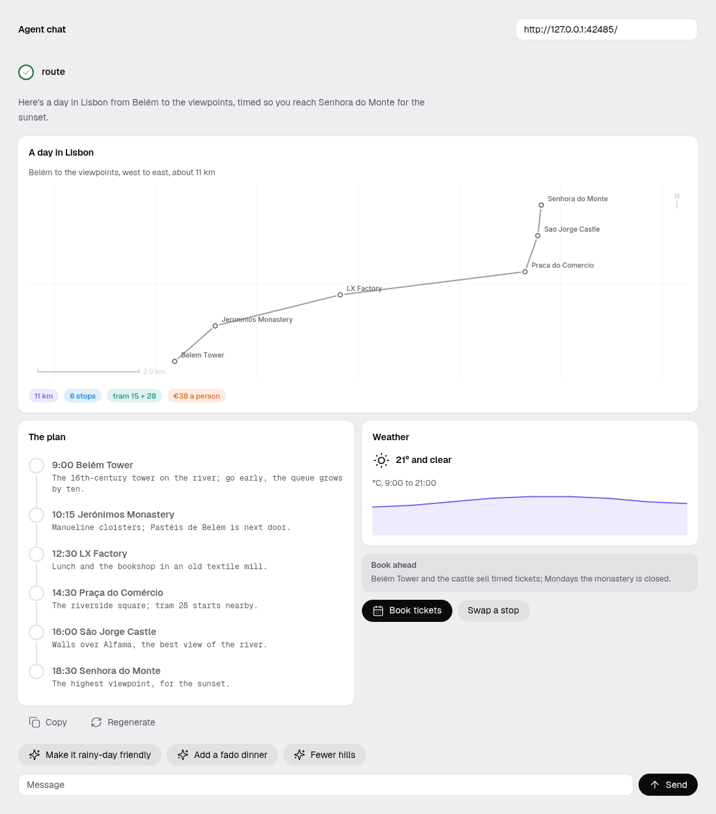
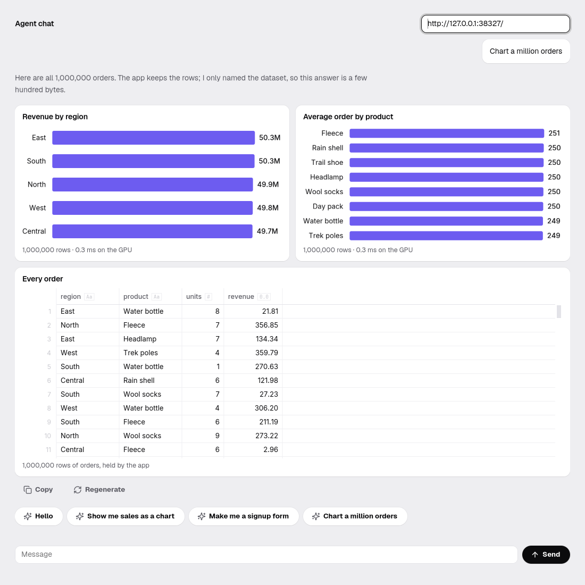
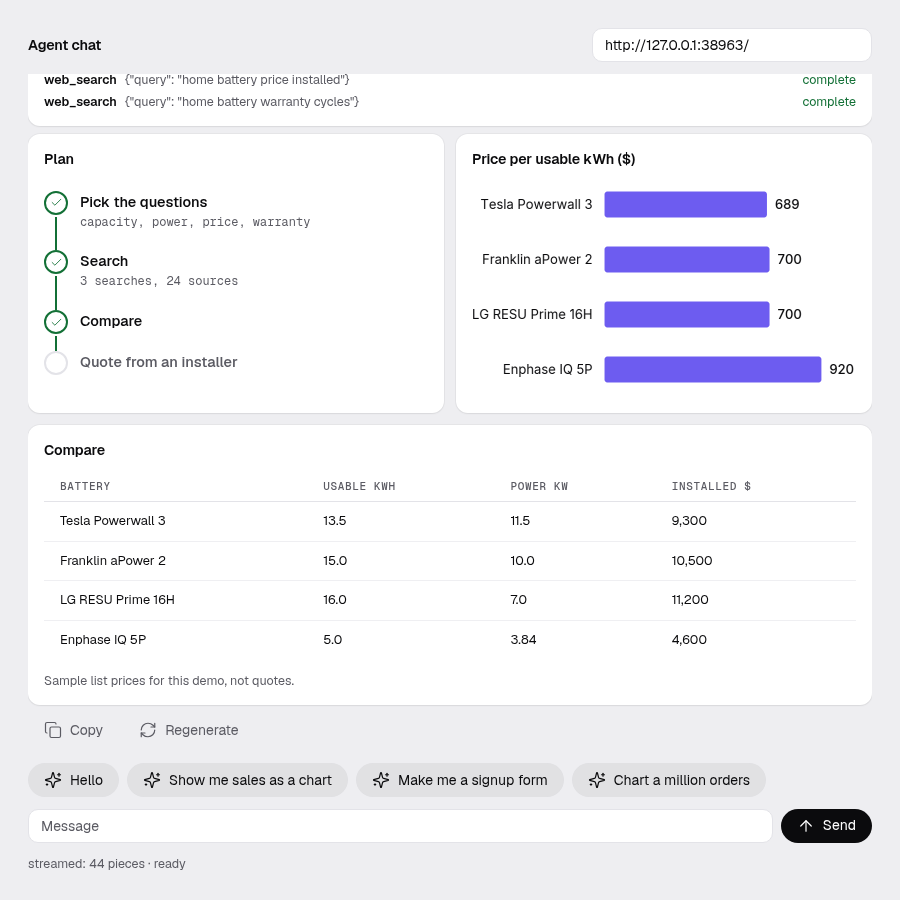
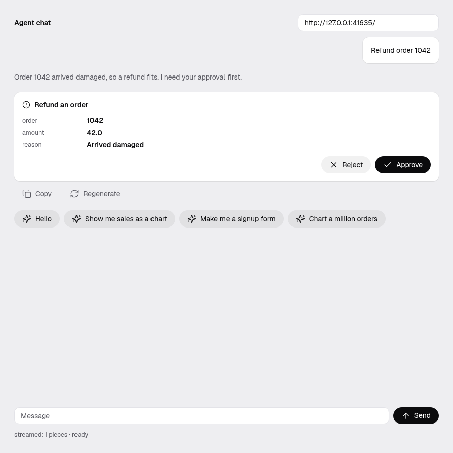
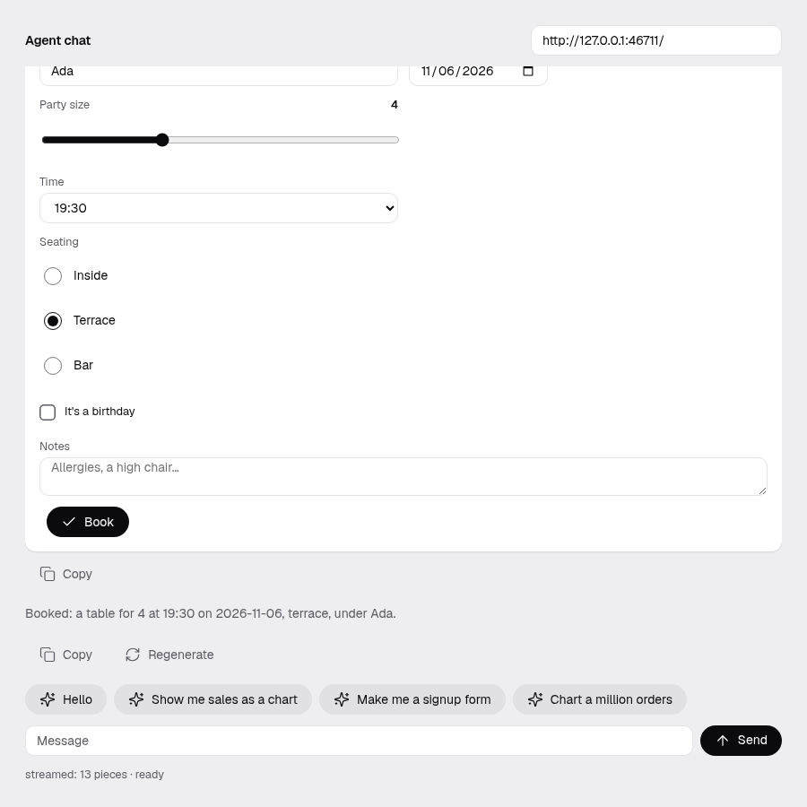
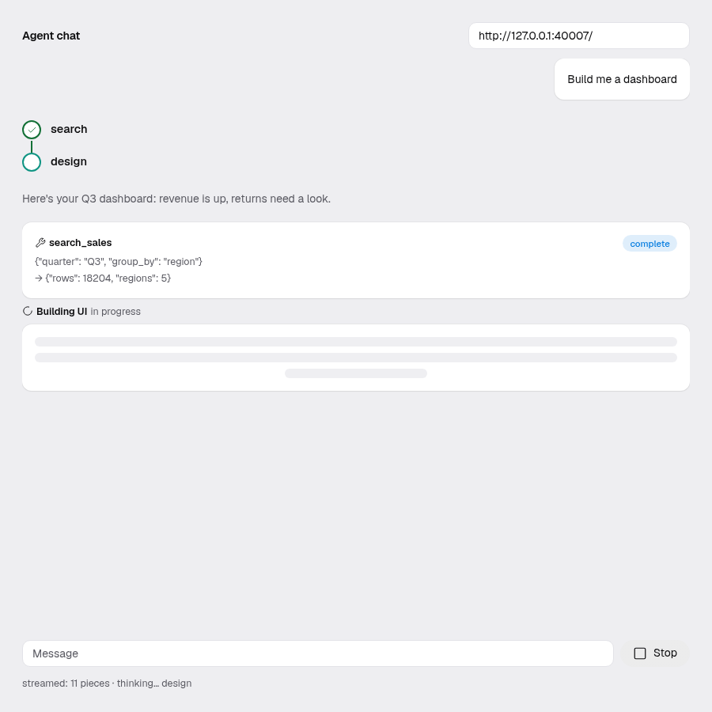
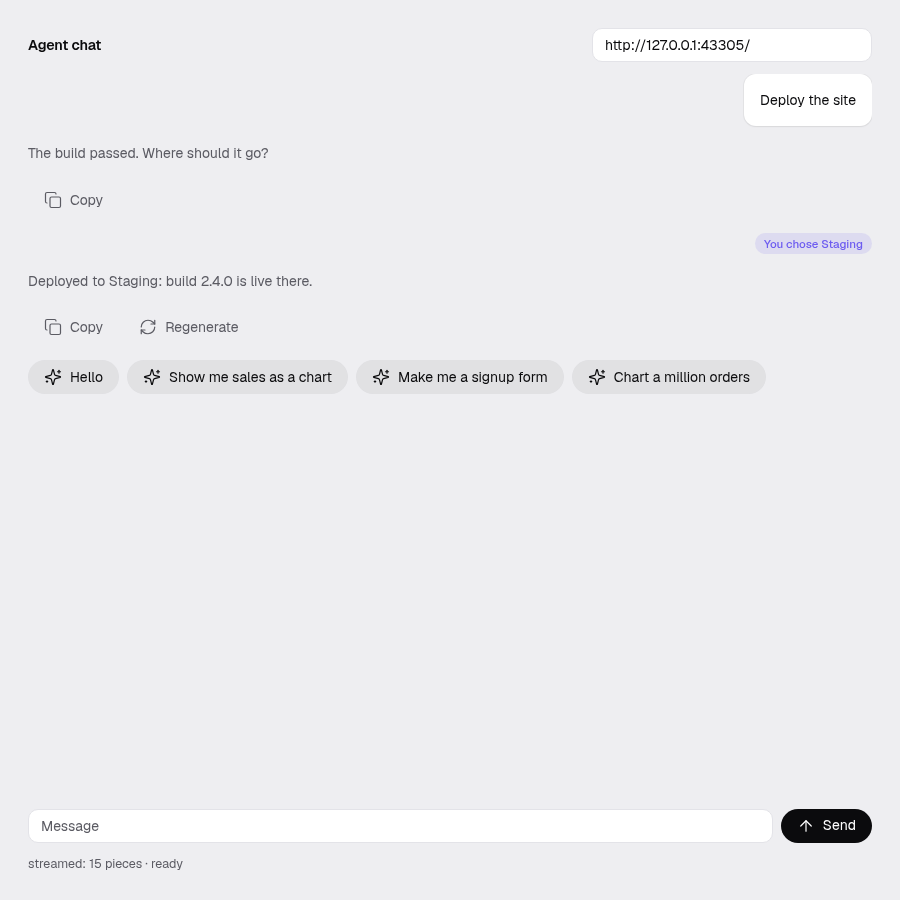

Ask for a map. Get a map.
An agent answers with a screen: a route on a map, a dashboard, a form, an approval. omxcode draws it with native widgets while the answer is still streaming. Standard AG-UI, with the agent in the app's own process when you want it.
Real screens an agent built. Nothing mocked up.
Each one is the same small app, examples/agentchat, answering a different question. The agent sends only data; every widget is omxcode's own.







36 components an agent can use. Everything a chat needs around them.
An agent can only name components from this catalog. Anything else is refused, and the agent is told why. Nothing an agent sends runs code; a link opens only when the person clicks it.
Layout
Words
Data
Input
Feedback
Drawn while it arrives
A screen is drawn from its first whole component. Parts still coming show as placeholders. Each chart redraws only when its own data changes.
Every call, with its stage
In progress, running, complete, with the result. Three or more calls in a row fold into one card. The agent's steps are a live checklist.
Ask first, then act
Mark a tool confirm=True and it waits for Approve or Reject. An agent can also pause to ask a question and carry on with the answer.
One component, three layouts
AgentChat: a panel, a sidebar or a popup. Markdown with Copy on code, a typing indicator, Stop, Retry, Regenerate, suggestion chips, and messages that arrive on a spring.
Rows stay in the app
A chart or grid can name a dataset the app holds. The agent never sends the rows, so a million of them cost the same few hundred bytes as ten.
An agent inside the app
LocalAgent runs in the app's own process, with no HTTP: its events go through the same code path as a server's.
One answer, step by step. The agent sends data; the app draws.
AG-UI is an open protocol between an agent and an app: the app sends the conversation, and the agent's answer streams back as events. A screen is one of those events: a call to a tool named render_ui.
The person asks
“Build me a dashboard.” The app posts the conversation to the agent, along with the tools it offers: render_ui with the catalog as a JSON Schema, any tools of its own, and the names of datasets it holds.
The agent streams back
Words, tool calls, steps and shared state arrive as server-sent events. The words appear as Markdown, a few letters at a time.
A screen arrives in pieces
render_ui's arguments come a few bytes at a time. omxcode closes the unfinished JSON at its last whole value, in one pass, and draws what is there. A placeholder marks where more is coming.
Checked against the catalog
Every component and property is checked: known names, the right types, at most 8 levels, 200 components and 32 KB. Anything else is refused, and the refusal goes back to the agent as the tool's result, so it can try again.
Drawn with native widgets
The same screen becomes GTK widgets on Linux and HTML on the web (AppKit on the Mac is next; not run with agents yet). Charts and maps are drawn by omxcode itself, so they look the same on both.
The person answers
Fields and toggles edit the state the agent sees. A button sends its answer back as the tool's result, and the agent carries on. A tool marked “ask first” waits for Approve or Reject.
{"ui": {"component": "Card",
"title": "A day in Lisbon",
"children": [
{"component": "MapView", "places": [
{"label": "Belém Tower",
"lat": 38.6916, "lon": -9.2160}, …]},
{"component": "ChartView",
"dataset": "orders",
"group_by": "region", "value": "revenue"},
{"component": "Button",
"label": "Book tickets", "action": "book"}]}}
Shortened. The full schema comes from mojoui.genui.schema(); run scripts/genui_schema.py to print it.

A chat with an agent in about 20 lines. The rest is the framework.
Drop AgentChat into any omxcode app and pass it four calls. The whole example, with a million-row dataset and an approval tool, is 75 lines.
from mojoui.agentchat import AgentChat, CHAT_PANEL from mojoui.agui import Tool from mojoui.sheethub import SheetHub struct Main(App): comptime HTTP = True var chat: AgentChat[SheetHub] def __init__(out self): self.chat = AgentChat[SheetHub]("http://127.0.0.1:8765/", layout=CHAT_PANEL) # chips on the welcome screen self.chat.suggest("Plan a day in Lisbon") # a tool of the app's own (schema: its JSON Schema, as text); # it waits for Approve self.chat.offer(Tool("refund_order", "Refund an order", schema), confirm=True) # rows the agent can name but never sends var hub = SheetHub() hub.add("orders", orders^) self.chat.set_hub(hub^) # the app hands the chat its four calls def requests(mut self) -> List[Request]: return self.chat.requests() def update(mut self, e: Event): _ = self.chat.update(e) def draw(mut self, canvas: Int, mut surface: Surface): self.chat.draw(canvas, surface, self.themed.palette) def view(self) -> View: return self.chat.view()
A sidebar is layout=CHAT_SIDEBAR. A popup over your own screen is CHAT_POPUP plus chat.over(content) in view(). Apps without datasets write AgentChat[NoData] and link nothing extra.
git clone https://github.com/abhisheksreesaila/omxcode cd omxcode && pixi install scripts/agentchat.sh # Linux app + scripted agent scripts/agentchat.sh --web # the same, in a browser scripts/agentchat.sh --live # a real model (docs/agui.md)
Tap a chip, or type “Plan a day in Lisbon”, “Chart a million orders” or “Refund order 1042”. The scripted agent needs no key and no network.
struct Helper(LocalAgent): # the RunAgentInput a server would get, in; # AG-UI events, out def respond(mut self, input: String) -> List[String]: return ['{"type":"RUN_STARTED",…}', …] # no HTTP: straight into the same handler self.chat.run_local(helper)
An omxcode app and an AG-UI agent. No keys for the demo.
omxcode Linux, web
Mojo 1.1 through pixi install. Linux with GTK 4 and libadwaita, or any browser through the web host. Not yet run with agents on the Mac.
An agent any AG-UI server
Anything that speaks AG-UI over HTTP: frameworks such as LangGraph, CrewAI, Mastra or Pydantic AI publish adapters. So far omxcode has been proved against its own scripted agent, built on the official AG-UI SDK, not yet against those frameworks.
Or no server LocalAgent
Write the agent in Mojo, in the app itself. Nothing to deploy, nothing on the network.
A GPU optional
Datasets are grouped on an NVIDIA GPU when there is one, and on the CPU otherwise. Nothing else needs it.
Plain AG-UI on the wire. Or no wire at all.
omxcode speaks AG-UI as the official SDK writes it, so it works with agents built for the protocol. And when the agent can live in the app, it runs in the same process, with no server in between.
Checked against the official SDK
Streams recorded with the official AG-UI SDK are read event for event, and every request omxcode sends passes the SDK's own models. It reads runs, text, tool calls, state snapshots and JSON Patch deltas, message snapshots, steps and custom events, and resumes LangGraph-style interrupts.
The agent inside the app
A LocalAgent gets the same input a server would and answers with the same events, straight into the same code path: no HTTP, no second program, nothing on the network. Datasets stay in the app too; an agent names them and never sends the rows.
- Any AG-UI server: proved against its own agent on the official SDK and against Pydantic AI's own AG-UI adapter, on GTK and the web. LangGraph, CrewAI, Mastra and others publish adapters too, and those haven't been run yet. How compatibility is checked, and how to run each check.
- Same events either way: an app can start with an agent in process and move it to a server later without changing its screens.
Wherever an answer is better as a screen.
A copilot over your own data
Ask for a breakdown and get a chart and a grid over the full dataset. The rows never leave the app, and the agent's answer stays small.
Approvals people can trust
Refunds, deploys, account changes: the agent proposes, a person sees exactly what will happen, and nothing runs until they approve.
Low latency, offline
A native app with the agent in its own process: no browser, no round trip, and it works without a network.
Forms on demand
Instead of building every form up front, let the agent make the one this question needs, from components you already trust.
One app, two places
The same Mojo file runs as a Linux app and in the browser, with the same agent screens.
No generated code
The agent can only describe screens from the catalog. It can't run scripts or invent components, and a link opens only when someone clicks it.
Not yet
- Every screen on this page comes from a scripted agent. No live model has been recorded yet, and no other AG-UI framework tested.
- Not yet run with agents on the Mac or a phone.
- A2UI, the newer screen format some AG-UI clients read, isn't supported yet.
- The map is drawn offline: route, places and scale, with no streets or tiles.